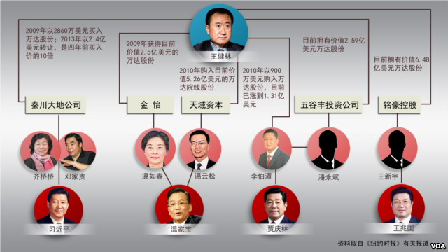

上个星期，知名国际媒体《纽约时报》连发了两篇文章，曝光了万达集团背后的天朝权贵家族。老读者应该知道，俺是很喜欢抹黑朝廷的。碰到这种机会，俺当然不能放过。今天发一篇博文聊聊此事。
说到大连的“万达集团”，大伙儿应该都不陌生。万达的老板王健林，其个人资产，在2013年荣登天朝富豪榜的榜首（资产超过300亿美元）。而在2007年的时候，他在胡润富豪榜排第148位（资产小于10亿美元）。恰恰是在这短短的6年间，万达集团吸收了一些非常关键的外部股东。而这些股东，又恰恰是朝廷高官的亲属。
这样一些“巧合”凑到一块儿，不由得让人浮想连篇......
先给出《纽约时报》那两篇报道的链接（如下）：
《万达帝国王健林——游刃于商业与权贵之间》
《寻找万达帝国背后的神秘股东》
《纽约时报》的资深记者傅才德（Michael Forsythe），经过多年的明查暗访，梳理出万达集团背后的权贵家族。目前已经找到的，至少有如下几个：
习包子的姐姐齐桥桥和姐夫邓家贵，都是万达集团的早期股东——两人在2009年花2860万美元买入万达集团的股份。到了2013年，习呆呆高调反腐，齐桥桥和邓家贵为了避嫌，把他俩持有的万达股份转让给别人，售价约2.4亿美元。虽然涨了8.5倍，但是跟后面几位更早期的股东相比，那就是小巫见大巫了。
值得一提的是：股权转让的对象，是一个已经在邓家贵的公司工作了15年的职员。所以，非常有可能——那人只是邓家贵夫妇的“白手套”（就是代为持股，如此一来，邓家贵夫妇的姓名就不会出现）
温家宝的儿子温云松（英文名：Winston Wen）是新天域资本创始人。新天域资本旗下的一家投资基金，在2010年入股万达集团，其持有的股份如今价值约5.26亿美元。
温家宝的女儿温如春（化名：常丽丽/Lily Chang），通过商业伙伴金怡，在2009年入股万达集团，如今价值约2.5亿美元。很明显，这个名叫“金怡”的所谓商业伙伴，其实是温如春的“白手套”。
贾庆林的女婿李伯潭，利用他控制的五谷丰投资咨询公司，于2010年12月买入万达旗下连锁影城价值900万美元的股份。如今这些股份升值到1.31亿美元。
李伯潭的白手套是“潘永斌”，他公司里面的一个普通工人。
王兆国儿子王新宇，利用他控制的铭豪控股，在2007年持有万达集团 2.5% 的股份。当时花了不到50万美元，如今价值约6.4亿美元。
之后，王新宇把这些股份转让给王兆国的外甥女杨欣。据猜测：杨欣是王新宇的“白手套”。
胡锦涛的儿子胡海峰，从2008年开始担任清华控股的党委书记。而清华控股旗下的某个投资基金，在那段时间成为万达集团的早期股东。
《纽约时报》的记者尚未找到证据证明胡海峰从中受益（当然啦，“没找到”不等于“没有”）。目前暂且认为，胡海峰是可疑的对象。因此，下面那张图中【尚未】包括胡锦涛家族。
下面这张图，是美国之音网站制作的，比较直观。

有必要提醒一下：
目前列出的这几个家族，是已经曝光的。说不定还有其它未曝光的权贵家族，也参与到万达集团的资本盛宴中。
这篇关于万达的报道，可谓一波三折。
报道的主要作者傅才德（Michael Forsythe），原本是“彭博新闻社”的老员工（在里面干了13年）。这篇报道在2013年就已经完成，即将发表时，被“彭博新闻社”的领导层砍了。为啥“彭博新闻社”要放弃这么重磅的报道捏？因为彭博公司在天朝销售“财经新闻终端”。如果这篇报道发出来，彭博在天朝的商业利益将会受到重创。
不光报道被砍掉，而且傅才德被彭博新闻社停职。之后的2014年，他被《纽约时报》雇佣，继续调研万达集团，终于在今年4月底发布了相关报道。由于多了一年的调研，这次发布的内容，相比2013年被毙掉的那篇，又增加了若干权贵（主要是“王新宇和温如春”）。
顺便说一下，由于傅才德锲而不舍地调查天朝权贵，他及家人还收到死亡威胁，
下面这张就是傅才德。
在本文的后半段，俺顺便借题发挥——抖一抖上述几个权贵家族的劣迹。
记得2012年开18大的时候，习呆呆在“中外记者见面会”上慷慨陈词，其中一句是：打铁还需自身硬。咱们来看看，习呆呆到底硬不硬？
记得前2年，出了一个“离岸金融解密”的特大丑闻。解密资料中包括了大量天朝权贵开设的离岸公司。这其中就包括习呆呆的家族成员。关于此事，当时俺还特地发了一篇博文《习包子露馅——习近平在内的权贵家族如何转移巨额海外资产》。如今，《纽约时报》的爆料再次说明了——包子的某些家族成员，很善于在天朝的政商两界之间游走。
如果习呆呆自己很硬，那他应该先拿自己家族的人开刀。这样一来，他的反腐才有说服力嘛！
在此，俺要第N次奉劝那些所谓的“习粉”，不要再被蒙蔽啦。包子早就露馅了，可惜你们一直视而不见。为啥会视而不见捏？因为很多习粉的内心深处都存在着“圣君情结”——关于这玩意儿，俺3年前专门写过一篇《天朝民众的心理分析：圣君情结》。有兴趣的同学可以去看一看。
话说“影帝”这个称号真不是白叫的，而且也确实迷惑了很多人。被迷惑的人当中，甚至包括一些敢于抨击朝廷的高级知识分子。
比如蛮有名的沙叶新（俺中学的语文课本，有他的话剧《陈毅市长》）。此人曾经写过好多篇抨击朝廷和中共的文章。俺印象比较深是《腐败文化》、《“宣传”文化》、《“表态”文化》、《“检讨”文化》。但即使是沙叶新这样的高级知识分子，竟然也被温影帝蒙蔽了——他曾经在某篇文章中公开替温家宝辩护。
在前一届朝廷班子里面，温影帝的家族，在贪腐方面可以说是非常肆无忌惮的。他的【每一个】直系亲属，全都散发着浓浓的铜臭味。他老婆是戴梦得珠宝的老板，号称“珠宝女王”；他儿子是新天域资本的创始人，号称“私募基金王子”，后来又当上了中国卫星通讯集团（央企）的董事长。连温家宝90多岁的老娘杨秀安（只是个普通的退休教师），名下都有巨额的平安保险股份，折合美金1.2亿。太牛B了！
俺这么说，可不是凭空污蔑。影帝的这几个直系亲属的资料，都是外国记者通过上市公司公开的资料查到的。而且早在2012年，《纽约时报》就发了多篇报道，揭露温家宝家族是如何在金融行业（很多与“平安保险”相关）鲸吞巨额财富（几十亿美元）。俺顺便给出这几篇报道的链接（如下）：
《总理家人隐秘的财富》
《温氏家族与平安崛起》
《一笔隐藏在香港的平安股权》
下面这张是老外制作的【温影帝家族关系图】，还挺全面的。

和温影帝比起来，胡面瘫显然低调得多，也收敛得多。但你千万不要以为他的家族是干净的。在俺整理的《太子党关系网络》中，列出了胡锦涛的好些个亲属，主要的几个包括：
儿子胡海峰——37岁就当上清华控股有限公司的党委书记；如今更是转战政界，出任浙江嘉兴市委副书记。
（试问，如果胡海峰不是总书记的儿子，他在商界、政界能如此顺畅吗？）
女婿茅道临——曾任华登国际投资集团副总裁；新浪创始人之一、大股东，曾任新浪的CEO。2005年与胡海清结婚。
（试问，如果胡海清不是总书记的女儿，茅道临还会跟她结婚吗？）
妹妹胡锦蓉——正太集团副董事长，该集团是建设部首批49家试点企业之一。
（试问，如果胡锦蓉不是总书记的妹妹，能当上这个副董事长吗？）
上面这几个，仅仅是九牛一毛。实际上天朝大大小小的权贵家族，至少上百个。不信你去看俺整理的《太子党关系网络》。而且俺整理的这份文档，肯定是【不全的】。因为很多资料是不公开的，没法查到。
在咱们天朝，每一个利润丰厚的行业（金融、房地产、军工、能源、IT...），都可以看到权贵的影子。整个国家大部分的财富，实际上是被权贵家族控制的。咱们天朝就是典型的“权贵资本主义”。
很多权贵家族的成员早就已经移民海外，并且把他们搜刮的巨额财富也转移到海外（参见《习包子露馅——习近平在内的权贵家族如何转移巨额海外资产》）。所以，权贵才是不折不扣的【海外反华势力】。每个普通的民众都应该明白——权贵才是你最大的敌人。
这两天，俺顺手又把《太子党关系网络》补充了一下。增加了“与万达集团相关的内容”。另外，最近传闻郭伯雄已经被抓，俺顺便也补充了郭伯雄家族的内容。
新的版本（2.2.2）已经上传到微软网盘。想要下载的同学，请猛击如下链接：（这是一个页面链接，请用鼠标直接打开，不要用鼠标右键的"另存为"）
https://onedrive.live.com/redir?resid=F5B0090663FEEADA!966
使用 BT Sync 的同学，可以同步“政治”目录，即可获取该文档。BT Sync 的同步可能会略有滞后。请稍安毋躁。
俺博客上，和本文相关的帖子（需翻墙）：
《习包子露馅——习近平在内的权贵家族如何转移巨额海外资产》
《王健林及万达集团背后的朝廷权贵家族（习、胡、温、贾、王）》
《每周转载：巴拿马文件曝光天朝权贵（大量网友评论）》
《每周转载：网友热议天朝权贵集团的“离岸”》
《俺整理的【太子党关系网络】》
《分析“制度性腐败”——为啥天朝的贪官屡禁不止？》
《若政治制度不公平，则经济改革无意义——谈谈天朝这个大赌场》
《相当奇葩的天朝，【劫贫济富】的国度》
《天朝民众的心理分析：圣君情结》
★关于“万达集团”
说到大连的“万达集团”，大伙儿应该都不陌生。万达的老板王健林，其个人资产，在2013年荣登天朝富豪榜的榜首（资产超过300亿美元）。而在2007年的时候，他在胡润富豪榜排第148位（资产小于10亿美元）。恰恰是在这短短的6年间，万达集团吸收了一些非常关键的外部股东。而这些股东，又恰恰是朝廷高官的亲属。
这样一些“巧合”凑到一块儿，不由得让人浮想连篇......
★万达集团牵涉了哪些权贵家族？
先给出《纽约时报》那两篇报道的链接（如下）：
《万达帝国王健林——游刃于商业与权贵之间》
《寻找万达帝国背后的神秘股东》
《纽约时报》的资深记者傅才德（Michael Forsythe），经过多年的明查暗访，梳理出万达集团背后的权贵家族。目前已经找到的，至少有如下几个：
◇习近平家族
习包子的姐姐齐桥桥和姐夫邓家贵，都是万达集团的早期股东——两人在2009年花2860万美元买入万达集团的股份。到了2013年，习呆呆高调反腐，齐桥桥和邓家贵为了避嫌，把他俩持有的万达股份转让给别人，售价约2.4亿美元。虽然涨了8.5倍，但是跟后面几位更早期的股东相比，那就是小巫见大巫了。
值得一提的是：股权转让的对象，是一个已经在邓家贵的公司工作了15年的职员。所以，非常有可能——那人只是邓家贵夫妇的“白手套”（就是代为持股，如此一来，邓家贵夫妇的姓名就不会出现）
◇温家宝家族
温家宝的儿子温云松（英文名：Winston Wen）是新天域资本创始人。新天域资本旗下的一家投资基金，在2010年入股万达集团，其持有的股份如今价值约5.26亿美元。
温家宝的女儿温如春（化名：常丽丽/Lily Chang），通过商业伙伴金怡，在2009年入股万达集团，如今价值约2.5亿美元。很明显，这个名叫“金怡”的所谓商业伙伴，其实是温如春的“白手套”。
◇贾庆林家族
贾庆林的女婿李伯潭，利用他控制的五谷丰投资咨询公司，于2010年12月买入万达旗下连锁影城价值900万美元的股份。如今这些股份升值到1.31亿美元。
李伯潭的白手套是“潘永斌”，他公司里面的一个普通工人。
◇王兆国家族
王兆国儿子王新宇，利用他控制的铭豪控股，在2007年持有万达集团 2.5% 的股份。当时花了不到50万美元，如今价值约6.4亿美元。
之后，王新宇把这些股份转让给王兆国的外甥女杨欣。据猜测：杨欣是王新宇的“白手套”。
◇胡锦涛家族
胡锦涛的儿子胡海峰，从2008年开始担任清华控股的党委书记。而清华控股旗下的某个投资基金，在那段时间成为万达集团的早期股东。
《纽约时报》的记者尚未找到证据证明胡海峰从中受益（当然啦，“没找到”不等于“没有”）。目前暂且认为，胡海峰是可疑的对象。因此，下面那张图中【尚未】包括胡锦涛家族。
下面这张图，是美国之音网站制作的，比较直观。
有必要提醒一下：
目前列出的这几个家族，是已经曝光的。说不定还有其它未曝光的权贵家族，也参与到万达集团的资本盛宴中。
★一波三折的报道
这篇关于万达的报道，可谓一波三折。
报道的主要作者傅才德（Michael Forsythe），原本是“彭博新闻社”的老员工（在里面干了13年）。这篇报道在2013年就已经完成，即将发表时，被“彭博新闻社”的领导层砍了。为啥“彭博新闻社”要放弃这么重磅的报道捏？因为彭博公司在天朝销售“财经新闻终端”。如果这篇报道发出来，彭博在天朝的商业利益将会受到重创。
不光报道被砍掉，而且傅才德被彭博新闻社停职。之后的2014年，他被《纽约时报》雇佣，继续调研万达集团，终于在今年4月底发布了相关报道。由于多了一年的调研，这次发布的内容，相比2013年被毙掉的那篇，又增加了若干权贵（主要是“王新宇和温如春”）。
顺便说一下，由于傅才德锲而不舍地调查天朝权贵，他及家人还收到死亡威胁，
下面这张就是傅才德。
★俺的点评
在本文的后半段，俺顺便借题发挥——抖一抖上述几个权贵家族的劣迹。
◇先说习呆呆
记得2012年开18大的时候，习呆呆在“中外记者见面会”上慷慨陈词，其中一句是：打铁还需自身硬。咱们来看看，习呆呆到底硬不硬？
记得前2年，出了一个“离岸金融解密”的特大丑闻。解密资料中包括了大量天朝权贵开设的离岸公司。这其中就包括习呆呆的家族成员。关于此事，当时俺还特地发了一篇博文《习包子露馅——习近平在内的权贵家族如何转移巨额海外资产》。如今，《纽约时报》的爆料再次说明了——包子的某些家族成员，很善于在天朝的政商两界之间游走。
如果习呆呆自己很硬，那他应该先拿自己家族的人开刀。这样一来，他的反腐才有说服力嘛！
在此，俺要第N次奉劝那些所谓的“习粉”，不要再被蒙蔽啦。包子早就露馅了，可惜你们一直视而不见。为啥会视而不见捏？因为很多习粉的内心深处都存在着“圣君情结”——关于这玩意儿，俺3年前专门写过一篇《天朝民众的心理分析：圣君情结》。有兴趣的同学可以去看一看。
◇再说温影帝
话说“影帝”这个称号真不是白叫的，而且也确实迷惑了很多人。被迷惑的人当中，甚至包括一些敢于抨击朝廷的高级知识分子。
比如蛮有名的沙叶新（俺中学的语文课本，有他的话剧《陈毅市长》）。此人曾经写过好多篇抨击朝廷和中共的文章。俺印象比较深是《腐败文化》、《“宣传”文化》、《“表态”文化》、《“检讨”文化》。但即使是沙叶新这样的高级知识分子，竟然也被温影帝蒙蔽了——他曾经在某篇文章中公开替温家宝辩护。
在前一届朝廷班子里面，温影帝的家族，在贪腐方面可以说是非常肆无忌惮的。他的【每一个】直系亲属，全都散发着浓浓的铜臭味。他老婆是戴梦得珠宝的老板，号称“珠宝女王”；他儿子是新天域资本的创始人，号称“私募基金王子”，后来又当上了中国卫星通讯集团（央企）的董事长。连温家宝90多岁的老娘杨秀安（只是个普通的退休教师），名下都有巨额的平安保险股份，折合美金1.2亿。太牛B了！
俺这么说，可不是凭空污蔑。影帝的这几个直系亲属的资料，都是外国记者通过上市公司公开的资料查到的。而且早在2012年，《纽约时报》就发了多篇报道，揭露温家宝家族是如何在金融行业（很多与“平安保险”相关）鲸吞巨额财富（几十亿美元）。俺顺便给出这几篇报道的链接（如下）：
《总理家人隐秘的财富》
《温氏家族与平安崛起》
《一笔隐藏在香港的平安股权》
下面这张是老外制作的【温影帝家族关系图】，还挺全面的。
◇最后说说胡面瘫
和温影帝比起来，胡面瘫显然低调得多，也收敛得多。但你千万不要以为他的家族是干净的。在俺整理的《太子党关系网络》中，列出了胡锦涛的好些个亲属，主要的几个包括：
儿子胡海峰——37岁就当上清华控股有限公司的党委书记；如今更是转战政界，出任浙江嘉兴市委副书记。
（试问，如果胡海峰不是总书记的儿子，他在商界、政界能如此顺畅吗？）
女婿茅道临——曾任华登国际投资集团副总裁；新浪创始人之一、大股东，曾任新浪的CEO。2005年与胡海清结婚。
（试问，如果胡海清不是总书记的女儿，茅道临还会跟她结婚吗？）
妹妹胡锦蓉——正太集团副董事长，该集团是建设部首批49家试点企业之一。
（试问，如果胡锦蓉不是总书记的妹妹，能当上这个副董事长吗？）
◇天朝是典型的“权贵资本主义”
上面这几个，仅仅是九牛一毛。实际上天朝大大小小的权贵家族，至少上百个。不信你去看俺整理的《太子党关系网络》。而且俺整理的这份文档，肯定是【不全的】。因为很多资料是不公开的，没法查到。
在咱们天朝，每一个利润丰厚的行业（金融、房地产、军工、能源、IT...），都可以看到权贵的影子。整个国家大部分的财富，实际上是被权贵家族控制的。咱们天朝就是典型的“权贵资本主义”。
很多权贵家族的成员早就已经移民海外，并且把他们搜刮的巨额财富也转移到海外（参见《习包子露馅——习近平在内的权贵家族如何转移巨额海外资产》）。所以，权贵才是不折不扣的【海外反华势力】。每个普通的民众都应该明白——权贵才是你最大的敌人。
★《太子党关系网络》更新
这两天，俺顺手又把《太子党关系网络》补充了一下。增加了“与万达集团相关的内容”。另外，最近传闻郭伯雄已经被抓，俺顺便也补充了郭伯雄家族的内容。
新的版本（2.2.2）已经上传到微软网盘。想要下载的同学，请猛击如下链接：（这是一个页面链接，请用鼠标直接打开，不要用鼠标右键的"另存为"）
https://onedrive.live.com/redir?resid=F5B0090663FEEADA!966
使用 BT Sync 的同学，可以同步“政治”目录，即可获取该文档。BT Sync 的同步可能会略有滞后。请稍安毋躁。
俺博客上，和本文相关的帖子（需翻墙）：
《习包子露馅——习近平在内的权贵家族如何转移巨额海外资产》
《王健林及万达集团背后的朝廷权贵家族（习、胡、温、贾、王）》
《每周转载：巴拿马文件曝光天朝权贵（大量网友评论）》
《每周转载：网友热议天朝权贵集团的“离岸”》
《俺整理的【太子党关系网络】》
《分析“制度性腐败”——为啥天朝的贪官屡禁不止？》
《若政治制度不公平，则经济改革无意义——谈谈天朝这个大赌场》
《相当奇葩的天朝，【劫贫济富】的国度》
《天朝民众的心理分析：圣君情结》
版权声明
本博客所有的原创文章，作者皆保留版权。转载必须包含本声明，保持本文完整，并以超链接形式注明作者编程随想和本文原始地址：
https://program-think.blogspot.com/2015/05/Wanda-and-Princelings.html
本博客所有的原创文章，作者皆保留版权。转载必须包含本声明，保持本文完整，并以超链接形式注明作者编程随想和本文原始地址：
https://program-think.blogspot.com/2015/05/Wanda-and-Princelings.html